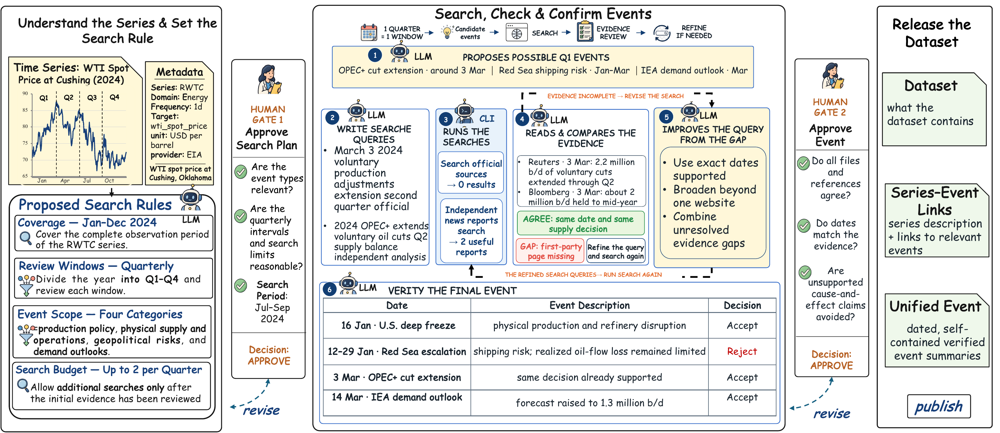
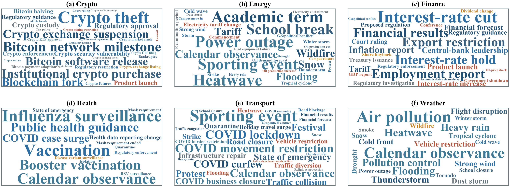
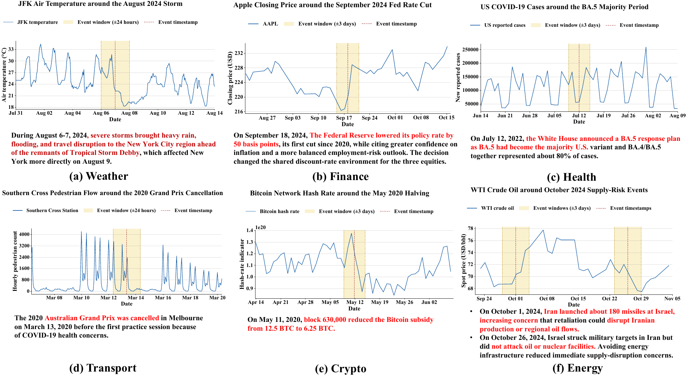

Event coverage by dataset
Average linked events per series and the fraction of series with at least one in-range event.
| Name | Avg. events / series | Series coverage |
|---|
A human-validated resource that aligns diverse time series with scoped, temporally honest real-world event context through an auditable CLI–Agent workflow.
World2TS combines mature public time-series collections with newly collected online series under one event-aware release contract.
Forecasting in the real world is rarely isolated from policy decisions, extreme weather, public-health shifts, operational disruptions, and market news. World2TS connects these events to the series for which they are semantically relevant—without treating temporal co-occurrence as causality. An LLM handles semantic judgment, the CLI enforces deterministic contracts, and humans approve both the search strategy and the final publication.
A real RWTC case makes every stage concrete—from series semantics and evidence retrieval to event screening, revision, approval, and publication.

LOTSA-derived collections and eight online source adapters enter the same strict Arrow + metadata boundary before event discovery.
| Name | Domain | Frequency | Series | Time span | Events |
|---|
Average linked events per series and the fraction of series with at least one in-range event.
| Name | Avg. events / series | Series coverage |
|---|
Reserved for the final choice between a compact coverage table and a time-span visualization.
Dataset time spans, event density over time, and window-level coverage will be placed here.
Reserved figure / table · analysis pendingDataset-level semantic summaries and series-aligned case studies reveal both event diversity and the limits of interpretation.
Atomic event concepts are shown separately for seven domain groups; calendar observances are fused and visually capped.

Six cases span weather, finance, health, transport, crypto, and energy; shaded windows show temporal context rather than causal effects.

Reserved for domain- or dataset-level changes in location, scale, volatility, and trend around validated events.
Reserved figure · experiment pendingReserved for matched controls, alternative windows, and robustness checks supporting the before/after analysis.
Reserved companion analysisThis section is intentionally reserved until the forecasting protocol, baselines, main results, and qualitative examples are frozen.
Primary comparison table across forecasting models, horizons, domains, and event-context settings.
Reserved main table · evaluation pendingPrediction with and without World2TS context.
Reserved qualitative resultEvent-sensitive forecast comparison.
Reserved qualitative resultFailure mode or context-ablation example.
Reserved qualitative resultThe empty areas are deliberate layout reservations. Their aspect ratios match likely paper-table and three-panel forecasting outputs, so completed evaluation assets can be inserted without changing the page hierarchy.
Author information is included below; venue and publication identifiers will be updated after finalization.
@misc{world2ts2026,
title = {World2TS: Real-World Event Context for Time-Series Forecasting},
author = {Liu, Zhiding and Yang, Jiqian and Cheng, Mingyue and Li, Zhi and Chen, Enhong},
year = {2026},
note = {Dataset and project page}
}